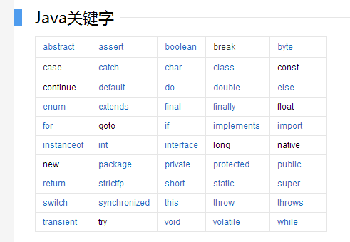

<!DOCTYPE html>


<html lang="zh-CN">


<head>
  <meta charset="utf-8" />
   
  <meta name="keywords" content="Java,Blockchain,代码,面试,学习,摄影,思考" />
   
  <meta name="description" content="Java 关键字一篇搞定" />
  
  <meta name="viewport" content="width=device-width, initial-scale=1, maximum-scale=1" />
  <title>
    Java 基础（一）Java 关键字 |  Shadow.Net
  </title>
  <meta name="generator" content="hexo-theme-ayer">
  
  <link rel="shortcut icon" href="/favicon.ico" />
  
  
<link rel="stylesheet" href="/dist/main.css">

  
<link rel="stylesheet" href="https://cdn.jsdelivr.net/gh/Shen-Yu/cdn/css/remixicon.min.css">

  
<link rel="stylesheet" href="/css/custom.css">

  
  
<script src="https://cdn.jsdelivr.net/npm/pace-js@1.0.2/pace.min.js"></script>

  
  

  
<script>
var _hmt = _hmt || [];
(function() {
	var hm = document.createElement("script");
	hm.src = "https://hm.baidu.com/hm.js?3311bd4794ea0a6b782915def3fc81fa";
	var s = document.getElementsByTagName("script")[0]; 
	s.parentNode.insertBefore(hm, s);
})();
</script>


<link rel="alternate" href="/atom.xml" title="Shadow.Net" type="application/atom+xml">
</head>

</html>

<body>
  <div id="app">
    
      
      <canvas width="1777" height="841"
        style="position: fixed; left: 0px; top: 0px; z-index: 99999; pointer-events: none;"></canvas>
      
    <main class="content on">
      <section class="outer">
  <article
  id="post-Java-Basics-Keywords"
  class="article article-type-post"
  itemscope
  itemprop="blogPost"
  data-scroll-reveal
>
  <div class="article-inner">
    
    <header class="article-header">
       
<h1 class="article-title sea-center" style="border-left:0" itemprop="name">
  Java 基础（一）Java 关键字
</h1>
 

    </header>
     
    <div class="article-meta">
      <a href="/articles/Java-Basics-Keywords.html" class="article-date">
  <time datetime="2021-07-17T04:25:14.000Z" itemprop="datePublished">2021-07-17</time>
</a> 
  <div class="article-category">
    <a class="article-category-link" href="/categories/Java/">Java</a>
  </div>
  
<div class="word_count">
    <span class="post-time">
        <span class="post-meta-item-icon">
            <i class="ri-quill-pen-line"></i>
            <span class="post-meta-item-text"> 字数统计:</span>
            <span class="post-count">1.4k</span>
        </span>
    </span>

    <span class="post-time">
        &nbsp; | &nbsp;
        <span class="post-meta-item-icon">
            <i class="ri-book-open-line"></i>
            <span class="post-meta-item-text"> 阅读时长≈</span>
            <span class="post-count">5 分钟</span>
        </span>
    </span>
</div>
 
    </div>
      
    <div class="tocbot"></div>


  
    <div class="article-entry" itemprop="articleBody">
       
  <p>Java 关键字一篇搞定！</p>
<p></p>
<span id="more"></span>

<h1 id="Java-关键字字典"><a href="#Java-关键字字典" class="headerlink" title="Java 关键字字典"></a>Java 关键字字典</h1><table>
<thead>
<tr>
<th>关键字</th>
<th>含义</th>
<th>使用方法</th>
</tr>
</thead>
<tbody><tr>
<td><strong>abstract</strong></td>
<td>表明类或者成员方法具有抽象属性</td>
<td></td>
</tr>
<tr>
<td>assert</td>
<td>断言</td>
<td>用来进行程序调试</td>
</tr>
<tr>
<td>boolean</td>
<td>基本数据类型之一，布尔类型</td>
<td></td>
</tr>
<tr>
<td>break</td>
<td>提前跳出一个块</td>
<td></td>
</tr>
<tr>
<td>byte</td>
<td>基本数据类型之一，字节类型</td>
<td></td>
</tr>
<tr>
<td>case</td>
<td></td>
<td>用在 switch 语句中，表示其中一个分支</td>
</tr>
<tr>
<td>catch</td>
<td></td>
<td>用在异常处理中，用来捕捉异常</td>
</tr>
<tr>
<td>char</td>
<td>基本数据类型之一，字符类型</td>
<td></td>
</tr>
<tr>
<td>class</td>
<td>类</td>
<td></td>
</tr>
<tr>
<td>const</td>
<td>保留关键字，没有具体含义</td>
<td></td>
</tr>
<tr>
<td>continue</td>
<td></td>
<td>回到一个块的开始处</td>
</tr>
<tr>
<td>default</td>
<td>默认</td>
<td>例如，用在 switch 语句中，表明一个默认的分支</td>
</tr>
<tr>
<td>do</td>
<td></td>
<td>用在 do-while 循环结构中</td>
</tr>
<tr>
<td>double</td>
<td>基本数据类型之一，双精度浮点数类型</td>
<td></td>
</tr>
<tr>
<td>else</td>
<td></td>
<td>用在条件语句中，表明当条件不成立时的分支</td>
</tr>
<tr>
<td>enum</td>
<td>枚举</td>
<td></td>
</tr>
<tr>
<td>extends</td>
<td>表明一个类型是另一个类型的子类型，这里常见的类型有类和接口</td>
<td></td>
</tr>
<tr>
<td><strong>final</strong></td>
<td>用来说明最终属性，表明一个类不能派生出子类，或者成员方法不能被覆盖，或者成员域的值不能被改变，用来定义常量</td>
<td></td>
</tr>
<tr>
<td>finally</td>
<td></td>
<td>用于处理异常情况，用来声明一个基本肯定会被执行到的语句块</td>
</tr>
<tr>
<td>float</td>
<td>基本数据类型之一，单精度浮点数类型</td>
<td></td>
</tr>
<tr>
<td>for</td>
<td></td>
<td>一种循环结构的引导词</td>
</tr>
<tr>
<td>goto</td>
<td></td>
<td>保留关键字，没有具体含义</td>
</tr>
<tr>
<td>if</td>
<td></td>
<td>条件语句的引导词</td>
</tr>
<tr>
<td>implements</td>
<td>表明一个类实现了给定的接口</td>
<td></td>
</tr>
<tr>
<td>import</td>
<td>表明要访问指定的类或包</td>
<td></td>
</tr>
<tr>
<td>instanceof</td>
<td></td>
<td>用来测试一个对象是否是指定类型的实例对象</td>
</tr>
<tr>
<td>int</td>
<td>基本数据类型之一，整数类型</td>
<td></td>
</tr>
<tr>
<td>interface</td>
<td>接口</td>
<td></td>
</tr>
<tr>
<td>long</td>
<td>基本数据类型之一，长整数类型</td>
<td></td>
</tr>
<tr>
<td>native</td>
<td></td>
<td>用来声明一个方法是由与计算机相关的语言（如 C/C++/FORTRAN 语言）实现的</td>
</tr>
<tr>
<td>new</td>
<td></td>
<td>用来创建新实例对象</td>
</tr>
<tr>
<td>package</td>
<td>包</td>
<td></td>
</tr>
<tr>
<td>private</td>
<td>一种访问控制方式：私用模式</td>
<td></td>
</tr>
<tr>
<td>protected</td>
<td>一种访问控制方式：保护模式</td>
<td></td>
</tr>
<tr>
<td>public</td>
<td>一种访问控制方式：共用模式</td>
<td></td>
</tr>
<tr>
<td>return</td>
<td></td>
<td>从成员方法中返回数据</td>
</tr>
<tr>
<td>short</td>
<td>基本数据类型之一，短整数类型</td>
<td></td>
</tr>
<tr>
<td><strong>static</strong></td>
<td>表明具有静态属性</td>
<td></td>
</tr>
<tr>
<td>strictfp</td>
<td></td>
<td>用来声明 FP_strict（单精度或双精度浮点数）表达式遵循 IEEE 754 算术规范</td>
</tr>
<tr>
<td>super</td>
<td>表明当前对象的父类型的引用或者父类型的构造方法</td>
<td></td>
</tr>
<tr>
<td>switch</td>
<td></td>
<td>分支语句结构的引导词</td>
</tr>
<tr>
<td><strong>synchronized</strong></td>
<td></td>
<td>表明一段代码需要同步执行</td>
</tr>
<tr>
<td>this</td>
<td></td>
<td>指向当前实例对象的引用</td>
</tr>
<tr>
<td>throw</td>
<td></td>
<td>抛出一个异常</td>
</tr>
<tr>
<td>throws</td>
<td></td>
<td>声明在当前定义的成员方法中所有需要抛出的异常</td>
</tr>
<tr>
<td>transient</td>
<td></td>
<td>声明不用序列化的成员域</td>
</tr>
<tr>
<td>try</td>
<td></td>
<td>尝试一个可能抛出异常的程序块</td>
</tr>
<tr>
<td>void</td>
<td></td>
<td>声明当前成员方法没有返回值</td>
</tr>
<tr>
<td><strong>volatile</strong></td>
<td></td>
<td>表明两个或者多个变量必须同步地发生变化</td>
</tr>
<tr>
<td>while</td>
<td></td>
<td>用在循环结构中</td>
</tr>
</tbody></table>
<h1 id="重点-Java-关键字详细介绍"><a href="#重点-Java-关键字详细介绍" class="headerlink" title="重点 Java 关键字详细介绍"></a>重点 Java 关键字详细介绍</h1><h2 id="final"><a href="#final" class="headerlink" title="final"></a>final</h2><h3 id="final-关键字在-Java-中有什么作用？"><a href="#final-关键字在-Java-中有什么作用？" class="headerlink" title="final 关键字在 Java 中有什么作用？"></a>final 关键字在 Java 中有什么作用？</h3><p>final 可用于修饰类、类属性和类方法。</p>
<p>特征：凡是引用 final 关键字的地方皆不可修改！</p>
<ul>
<li>修饰类：表示该类不能被继承。</li>
<li>修饰变量：表示变量只能一次赋值之后值不能被修改（常量）。</li>
<li>修饰方法：表示方法不能被重写。</li>
</ul>
<h3 id="final-有哪些用法？"><a href="#final-有哪些用法？" class="headerlink" title="final 有哪些用法？"></a>final 有哪些用法？</h3><p>这个问题很多面试官都喜欢问，虽然无聊但确实能让人懵逼一下。</p>
<ul>
<li>被 final 修饰的类不能被继承。</li>
<li>被 final修饰的常量，在编译阶段会存入常量池内。</li>
<li>被 final 修饰的变量不能被改变。如果修饰引用，那么表示引用不可变，引用指向的内容可变。</li>
<li>被 final 修饰的方法不能被重写。</li>
<li>被 final 修饰的方法，JVM 会尝试将其内联，以提高运行效率。</li>
</ul>
<p>除此之外，编译器对 final 域要遵守的两个重排序规则更好：</p>
<ul>
<li><p>在构造函数内对一个 final 域的写入，与随后把这个被构造对象的引用赋值给一个引用变量，这两个操作之间不能重排序。</p>
</li>
<li><p>初次读一个包含 final 域的对象的引用，与随后初次读这个 final 域，这两个操作之间不能重排序。</p>
</li>
</ul>
<h2 id="static"><a href="#static" class="headerlink" title="static"></a>static</h2><h3 id="static-有哪些用法？"><a href="#static-有哪些用法？" class="headerlink" title="static 有哪些用法？"></a>static 有哪些用法？</h3><p>大家都知道 static 关键字两个基本的用法：静态变量和静态方法。也就是说，被 static 所修饰的变量/方法都属于类的静态资源，类实例所共享。</p>
<p>除了静态变量和静态方法之外，static 也用于静态块，多用于初始化操作：</p>
<figure class="highlight java"><table><tr><td class="gutter"><pre><span class="line">1</span><br><span class="line">2</span><br><span class="line">3</span><br><span class="line">4</span><br><span class="line">5</span><br></pre></td><td class="code"><pre><span class="line"><span class="keyword">public</span> <span class="class"><span class="keyword">class</span> <span class="title">PreCache</span> </span>&#123;</span><br><span class="line">    <span class="keyword">static</span> &#123;</span><br><span class="line">        <span class="comment">// 执行相关操作</span></span><br><span class="line">    &#125;</span><br><span class="line">&#125;</span><br></pre></td></tr></table></figure>

<p>此外 static 也多用于修饰内部类，此时称之为静态内部类。</p>
<p>最后一种用法就是静态导包，即 <code>import static</code>。import static 是在 JDK1.5 之后引入的新特性，可以用来指定导入某个类中的静态资源，并且不需要使用类名，可以直接使用资源名，例如：</p>
<figure class="highlight java"><table><tr><td class="gutter"><pre><span class="line">1</span><br><span class="line">2</span><br><span class="line">3</span><br><span class="line">4</span><br><span class="line">5</span><br><span class="line">6</span><br><span class="line">7</span><br><span class="line">8</span><br></pre></td><td class="code"><pre><span class="line"><span class="keyword">import</span> <span class="keyword">static</span> java.lang.Math.*;</span><br><span class="line"></span><br><span class="line"><span class="keyword">public</span> <span class="class"><span class="keyword">class</span> <span class="title">Test</span> </span>&#123;</span><br><span class="line">    <span class="function"><span class="keyword">public</span> <span class="keyword">static</span> <span class="keyword">void</span> <span class="title">main</span><span class="params">(String[] args)</span> </span>&#123;</span><br><span class="line">        <span class="comment">// System.out.println(Math.sin(20)); 传统做法</span></span><br><span class="line">        System.out.println(sin(<span class="number">20</span>));</span><br><span class="line">    &#125;</span><br><span class="line">&#125;</span><br></pre></td></tr></table></figure>


<h2 id="static-和-final-的区别"><a href="#static-和-final-的区别" class="headerlink" title="static 和 final 的区别"></a>static 和 final 的区别</h2><table>
<thead>
<tr>
<th>修饰物</th>
<th>关键词</th>
<th>影响</th>
</tr>
</thead>
<tbody><tr>
<td>变量</td>
<td>final</td>
<td>分配到常量池中，程序不可改变其值</td>
</tr>
<tr>
<td>变量</td>
<td>static</td>
<td>分配在内存堆上，引用都会指向这一个地址而不会重新分配内存</td>
</tr>
<tr>
<td>方法</td>
<td>final</td>
<td>子类中将不能被重写</td>
</tr>
<tr>
<td>方法块</td>
<td>static</td>
<td>虚拟机优先加载</td>
</tr>
<tr>
<td>类</td>
<td>final</td>
<td>不能被继承</td>
</tr>
<tr>
<td>类</td>
<td>static</td>
<td>可以直接通过类来调用而不需要 new</td>
</tr>
</tbody></table>
 
      <!-- reward -->
      
      <div id="reword-out">
        <div id="reward-btn">
          打赏
        </div>
      </div>
      
    </div>
    

    <!-- copyright -->
    
    <div class="declare">
      <ul class="post-copyright">
        <li>
          <i class="ri-copyright-line"></i>
          <strong>版权声明： </strong>
          
          本博客所有文章除特别声明外，著作权归作者所有。转载请注明出处！
          
        </li>
      </ul>
    </div>
    
    <footer class="article-footer">
       
<div class="share-btn">
      <span class="share-sns share-outer">
        <i class="ri-share-forward-line"></i>
        分享
      </span>
      <div class="share-wrap">
        <i class="arrow"></i>
        <div class="share-icons">
          
          <a class="weibo share-sns" href="javascript:;" data-type="weibo">
            <i class="ri-weibo-fill"></i>
          </a>
          <a class="weixin share-sns wxFab" href="javascript:;" data-type="weixin">
            <i class="ri-wechat-fill"></i>
          </a>
          <a class="qq share-sns" href="javascript:;" data-type="qq">
            <i class="ri-qq-fill"></i>
          </a>
          <a class="douban share-sns" href="javascript:;" data-type="douban">
            <i class="ri-douban-line"></i>
          </a>
          <!-- <a class="qzone share-sns" href="javascript:;" data-type="qzone">
            <i class="icon icon-qzone"></i>
          </a> -->
          
          <a class="facebook share-sns" href="javascript:;" data-type="facebook">
            <i class="ri-facebook-circle-fill"></i>
          </a>
          <a class="twitter share-sns" href="javascript:;" data-type="twitter">
            <i class="ri-twitter-fill"></i>
          </a>
          <a class="google share-sns" href="javascript:;" data-type="google">
            <i class="ri-google-fill"></i>
          </a>
        </div>
      </div>
</div>

<div class="wx-share-modal">
    <a class="modal-close" href="javascript:;"><i class="ri-close-circle-line"></i></a>
    <p>扫一扫，分享到微信</p>
    <div class="wx-qrcode">
      
    </div>
</div>

<div id="share-mask"></div>  
  <ul class="article-tag-list" itemprop="keywords"><li class="article-tag-list-item"><a class="article-tag-list-link" href="/tags/Java/" rel="tag">Java</a></li><li class="article-tag-list-item"><a class="article-tag-list-link" href="/tags/%E9%9D%A2%E8%AF%95/" rel="tag">面试</a></li></ul>

    </footer>
  </div>

   
  <nav class="article-nav">
    
      <a href="/articles/Java-Framework-EDAS-Introduction.html" class="article-nav-link">
        <strong class="article-nav-caption">上一篇</strong>
        <div class="article-nav-title">
          
            企业级分布式应用服务 EDAS 简介
          
        </div>
      </a>
    
    
      <a href="/articles/Java-Interview-Menu.html" class="article-nav-link">
        <strong class="article-nav-caption">下一篇</strong>
        <div class="article-nav-title">巅峰之旅（二）Java 灵魂拷问汇总</div>
      </a>
    
  </nav>

   
<!-- valine评论 -->
<div id="vcomments-box">
  <div id="vcomments"></div>
</div>
<script src="//cdn1.lncld.net/static/js/3.0.4/av-min.js"></script>
<script src="https://cdn.jsdelivr.net/npm/valine@1.4.14/dist/Valine.min.js"></script>
<script>
  new Valine({
    el: "#vcomments",
    app_id: "pGdwyT4C1SLK3tNu5BiWT5wK-gzGzoHsz",
    app_key: "t07S7p0VCiw6wR6HdlEjli0G",
    path: window.location.pathname,
    avatar: "mp",
    placeholder: "给我的文章加点评论吧~",
    recordIP: true,
  });
  const infoEle = document.querySelector("#vcomments .info");
  if (infoEle && infoEle.childNodes && infoEle.childNodes.length > 0) {
    infoEle.childNodes.forEach(function (item) {
      item.parentNode.removeChild(item);
    });
  }
</script>
<style>
  #vcomments-box {
    padding: 5px 30px;
  }

  @media screen and (max-width: 800px) {
    #vcomments-box {
      padding: 5px 0px;
    }
  }

  #vcomments-box #vcomments {
    background-color: #fff;
  }

  .v .vlist .vcard .vh {
    padding-right: 20px;
  }

  .v .vlist .vcard {
    padding-left: 10px;
  }
</style>

 
     
</article>

</section>
      <footer class="footer">
  <div class="outer">
    <ul>
      <li>
        Copyrights &copy;
        2017-2021
        <i class="ri-heart-fill heart_icon"></i> Shadowalker
      </li>
    </ul>
    <ul>
      <li>
        
        
        
        由 <a href="https://hexo.io" target="_blank">Hexo</a> 强力驱动
        <span class="division">|</span>
        主题 - <a href="https://github.com/Shen-Yu/hexo-theme-ayer" target="_blank">Ayer</a>
        
      </li>
    </ul>
    <ul>
      <li>
        
        
        <span>
  <span><i class="ri-user-3-fill"></i>访问人数:<span id="busuanzi_value_site_uv"></span></s>
  <span class="division">|</span>
  <span><i class="ri-eye-fill"></i>浏览次数:<span id="busuanzi_value_page_pv"></span></span>
</span>
        
      </li>
    </ul>
    <ul>
      
    </ul>
    <ul>
      
    </ul>
    <ul>
      <li>
        <!-- cnzz统计 -->
        
        <script type="text/javascript" src='&lt;script type=&#34;text/javascript&#34; src=&#34;https://s4.cnzz.com/z_stat.php?id=1278565805&amp;web_id=1278565805&#34;&gt;&lt;/script&gt;'></script>
        
      </li>
    </ul>
  </div>
</footer>
      <div class="float_btns">
        <div class="totop" id="totop">
  <i class="ri-arrow-up-line"></i>
</div>

<div class="todark" id="todark">
  <i class="ri-moon-line"></i>
</div>

      </div>
    </main>
    <aside class="sidebar on">
      <button class="navbar-toggle"></button>
<nav class="navbar">
  
  <div class="logo">
    <a href="/"></a>
  </div>
  
  <ul class="nav nav-main">
    
    <li class="nav-item">
      <a class="nav-item-link" href="/">主页</a>
    </li>
    
    <li class="nav-item">
      <a class="nav-item-link" href="/archives">归档</a>
    </li>
    
    <li class="nav-item">
      <a class="nav-item-link" href="/categories">分类</a>
    </li>
    
    <li class="nav-item">
      <a class="nav-item-link" href="/tags">标签</a>
    </li>
    
    <li class="nav-item">
      <a class="nav-item-link" target="_blank" rel="noopener" href="https://mr-shaodwalker.lofter.com/">摄影</a>
    </li>
    
    <li class="nav-item">
      <a class="nav-item-link" href="/schedule">计划</a>
    </li>
    
    <li class="nav-item">
      <a class="nav-item-link" href="/about">关于</a>
    </li>
    
  </ul>
</nav>
<nav class="navbar navbar-bottom">
  <ul class="nav">
    <li class="nav-item">
      
      <a class="nav-item-link nav-item-search"  title="搜索">
        <i class="ri-search-line"></i>
      </a>
      
      
    </li>
  </ul>
</nav>
<div class="search-form-wrap">
  <div class="local-search local-search-plugin">
  <input type="search" id="local-search-input" class="local-search-input" placeholder="Search...">
  <div id="local-search-result" class="local-search-result"></div>
</div>
</div>
    </aside>
    <script>
      if (window.matchMedia("(max-width: 768px)").matches) {
        document.querySelector('.content').classList.remove('on');
        document.querySelector('.sidebar').classList.remove('on');
      }
    </script>
    <div id="mask"></div>

<!-- #reward -->
<div id="reward">
  <span class="close"><i class="ri-close-line"></i></span>
  <p class="reward-p"><i class="ri-cup-line"></i>请我喝杯咖啡吧~</p>
  <div class="reward-box">
    
    <div class="reward-item">
      
      <span class="reward-type">支付宝</span>
    </div>
    
    
    <div class="reward-item">
      
      <span class="reward-type">微信</span>
    </div>
    
  </div>
</div>
    
<script src="/js/jquery-2.0.3.min.js"></script>


<script src="/js/lazyload.min.js"></script>

<!-- Tocbot -->


<script src="/js/tocbot.min.js"></script>

<script>
  tocbot.init({
    tocSelector: '.tocbot',
    contentSelector: '.article-entry',
    headingSelector: 'h1, h2, h3, h4, h5, h6',
    hasInnerContainers: true,
    scrollSmooth: true,
    scrollContainer: 'main',
    positionFixedSelector: '.tocbot',
    positionFixedClass: 'is-position-fixed',
    fixedSidebarOffset: 'auto'
  });
</script>

<script src="https://cdn.jsdelivr.net/npm/jquery-modal@0.9.2/jquery.modal.min.js"></script>
<link rel="stylesheet" href="https://cdn.jsdelivr.net/npm/jquery-modal@0.9.2/jquery.modal.min.css">
<script src="https://cdn.jsdelivr.net/npm/justifiedGallery@3.7.0/dist/js/jquery.justifiedGallery.min.js"></script>

<script src="/dist/main.js"></script>

<!-- ImageViewer -->

<!-- Root element of PhotoSwipe. Must have class pswp. -->
<div class="pswp" tabindex="-1" role="dialog" aria-hidden="true">

    <!-- Background of PhotoSwipe. 
         It's a separate element as animating opacity is faster than rgba(). -->
    <div class="pswp__bg"></div>

    <!-- Slides wrapper with overflow:hidden. -->
    <div class="pswp__scroll-wrap">

        <!-- Container that holds slides. 
            PhotoSwipe keeps only 3 of them in the DOM to save memory.
            Don't modify these 3 pswp__item elements, data is added later on. -->
        <div class="pswp__container">
            <div class="pswp__item"></div>
            <div class="pswp__item"></div>
            <div class="pswp__item"></div>
        </div>

        <!-- Default (PhotoSwipeUI_Default) interface on top of sliding area. Can be changed. -->
        <div class="pswp__ui pswp__ui--hidden">

            <div class="pswp__top-bar">

                <!--  Controls are self-explanatory. Order can be changed. -->

                <div class="pswp__counter"></div>

                <button class="pswp__button pswp__button--close" title="Close (Esc)"></button>

                <button class="pswp__button pswp__button--share" style="display:none" title="Share"></button>

                <button class="pswp__button pswp__button--fs" title="Toggle fullscreen"></button>

                <button class="pswp__button pswp__button--zoom" title="Zoom in/out"></button>

                <!-- Preloader demo http://codepen.io/dimsemenov/pen/yyBWoR -->
                <!-- element will get class pswp__preloader--active when preloader is running -->
                <div class="pswp__preloader">
                    <div class="pswp__preloader__icn">
                        <div class="pswp__preloader__cut">
                            <div class="pswp__preloader__donut"></div>
                        </div>
                    </div>
                </div>
            </div>

            <div class="pswp__share-modal pswp__share-modal--hidden pswp__single-tap">
                <div class="pswp__share-tooltip"></div>
            </div>

            <button class="pswp__button pswp__button--arrow--left" title="Previous (arrow left)">
            </button>

            <button class="pswp__button pswp__button--arrow--right" title="Next (arrow right)">
            </button>

            <div class="pswp__caption">
                <div class="pswp__caption__center"></div>
            </div>

        </div>

    </div>

</div>

<link rel="stylesheet" href="https://cdn.jsdelivr.net/npm/photoswipe@4.1.3/dist/photoswipe.min.css">
<link rel="stylesheet" href="https://cdn.jsdelivr.net/npm/photoswipe@4.1.3/dist/default-skin/default-skin.min.css">
<script src="https://cdn.jsdelivr.net/npm/photoswipe@4.1.3/dist/photoswipe.min.js"></script>
<script src="https://cdn.jsdelivr.net/npm/photoswipe@4.1.3/dist/photoswipe-ui-default.min.js"></script>

<script>
    function viewer_init() {
        let pswpElement = document.querySelectorAll('.pswp')[0];
        let $imgArr = document.querySelectorAll(('.article-entry img:not(.reward-img)'))

        $imgArr.forEach(($em, i) => {
            $em.onclick = () => {
                // slider展开状态
                // todo: 这样不好，后面改成状态
                if (document.querySelector('.left-col.show')) return
                let items = []
                $imgArr.forEach(($em2, i2) => {
                    let img = $em2.getAttribute('data-idx', i2)
                    let src = $em2.getAttribute('data-target') || $em2.getAttribute('src')
                    let title = $em2.getAttribute('alt')
                    // 获得原图尺寸
                    const image = new Image()
                    image.src = src
                    items.push({
                        src: src,
                        w: image.width || $em2.width,
                        h: image.height || $em2.height,
                        title: title
                    })
                })
                var gallery = new PhotoSwipe(pswpElement, PhotoSwipeUI_Default, items, {
                    index: parseInt(i)
                });
                gallery.init()
            }
        })
    }
    viewer_init()
</script>

<!-- MathJax -->

<script type="text/x-mathjax-config">
  MathJax.Hub.Config({
      tex2jax: {
          inlineMath: [ ['$','$'], ["\\(","\\)"]  ],
          processEscapes: true,
          skipTags: ['script', 'noscript', 'style', 'textarea', 'pre', 'code']
      }
  });

  MathJax.Hub.Queue(function() {
      var all = MathJax.Hub.getAllJax(), i;
      for(i=0; i < all.length; i += 1) {
          all[i].SourceElement().parentNode.className += ' has-jax';
      }
  });
</script>

<script src="https://cdn.jsdelivr.net/npm/mathjax@2.7.6/unpacked/MathJax.js?config=TeX-AMS-MML_HTMLorMML"></script>
<script>
  var ayerConfig = {
    mathjax: true
  }
</script>

<!-- Katex -->

<!-- busuanzi  -->


<script src="/js/busuanzi-2.3.pure.min.js"></script>


<!-- ClickLove -->

<!-- ClickBoom1 -->

<!-- ClickBoom2 -->


<script src="/js/clickBoom2.js"></script>


<!-- CodeCopy -->


<link rel="stylesheet" href="/css/clipboard.css">

<script src="https://cdn.jsdelivr.net/npm/clipboard@2/dist/clipboard.min.js"></script>
<script>
  function wait(callback, seconds) {
    var timelag = null;
    timelag = window.setTimeout(callback, seconds);
  }
  !function (e, t, a) {
    var initCopyCode = function(){
      var copyHtml = '';
      copyHtml += '<button class="btn-copy" data-clipboard-snippet="">';
      copyHtml += '<i class="ri-file-copy-2-line"></i><span>COPY</span>';
      copyHtml += '</button>';
      $(".highlight .code pre").before(copyHtml);
      $(".article pre code").before(copyHtml);
      var clipboard = new ClipboardJS('.btn-copy', {
        target: function(trigger) {
          return trigger.nextElementSibling;
        }
      });
      clipboard.on('success', function(e) {
        let $btn = $(e.trigger);
        $btn.addClass('copied');
        let $icon = $($btn.find('i'));
        $icon.removeClass('ri-file-copy-2-line');
        $icon.addClass('ri-checkbox-circle-line');
        let $span = $($btn.find('span'));
        $span[0].innerText = 'COPIED';
        
        wait(function () { // 等待两秒钟后恢复
          $icon.removeClass('ri-checkbox-circle-line');
          $icon.addClass('ri-file-copy-2-line');
          $span[0].innerText = 'COPY';
        }, 2000);
      });
      clipboard.on('error', function(e) {
        e.clearSelection();
        let $btn = $(e.trigger);
        $btn.addClass('copy-failed');
        let $icon = $($btn.find('i'));
        $icon.removeClass('ri-file-copy-2-line');
        $icon.addClass('ri-time-line');
        let $span = $($btn.find('span'));
        $span[0].innerText = 'COPY FAILED';
        
        wait(function () { // 等待两秒钟后恢复
          $icon.removeClass('ri-time-line');
          $icon.addClass('ri-file-copy-2-line');
          $span[0].innerText = 'COPY';
        }, 2000);
      });
    }
    initCopyCode();
  }(window, document);
</script>


<!-- CanvasBackground -->


<script src="/js/dz.js"></script>


    
  </div>
<script src="/live2dw/lib/L2Dwidget.min.js?094cbace49a39548bed64abff5988b05"></script><script>L2Dwidget.init({"log":false,"pluginJsPath":"lib/","pluginModelPath":"assets/","pluginRootPath":"live2dw/","tagMode":false});</script></body>

</html>